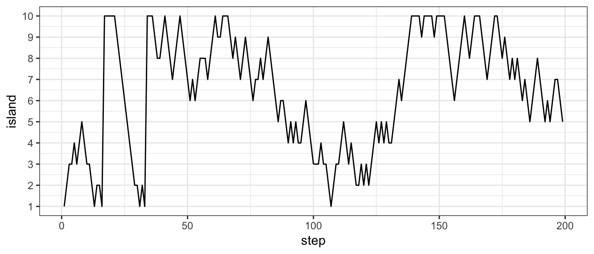
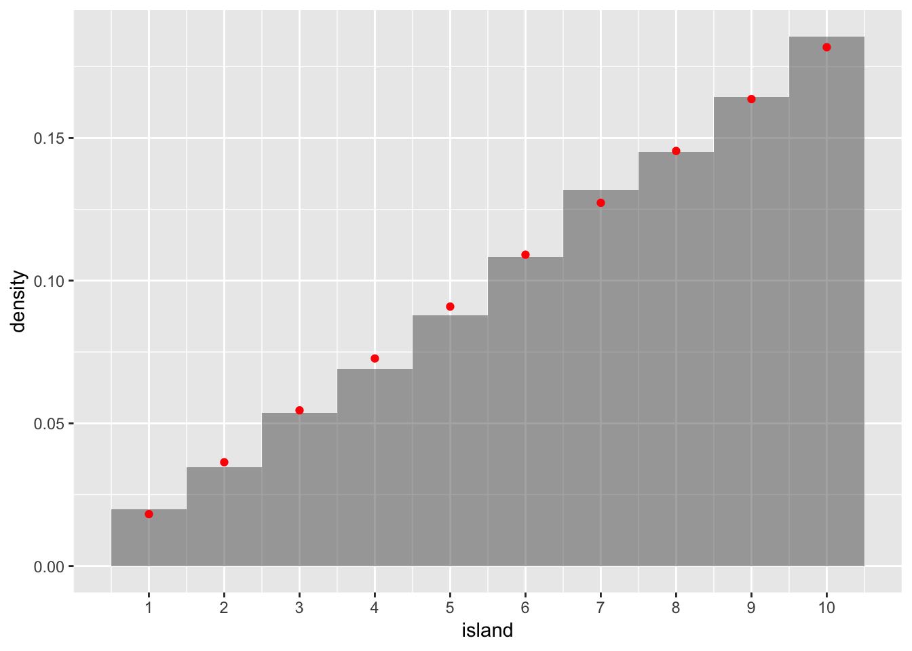

7 Markov Chain Monte Carlo (MCMC)
7.1 King Markov and Advisor Metropolis
King Markov is king of a chain of 5 islands. Rather than live in a palace, he lives in a royal boat. Each night the royal boat anchors in the harbor of one of the islands. The law declares that the king must harbor at each island in proportion to the population of the island.
Example: if the populations of the islands are 100, 200, 300, 400, and 500 people, how often must King Markov harbor at each island?
King Markov has some personality quirks:
He can’t stand record keeping. So he doesn’t know the poplations on his islands and doesn’t keep track of which islands he has visited when.
He can’t stand routine (variety is the spice of his life), so he doesn’t want to know each night where he will be the next night.
He asks Advisor Metropolis to devise a way for him to obey the law but that
- randomly picks which island to stay at each night
- doesn’t require him to remember where he has been in the past
- doesn’t require him to remember the populations of all the islands
He can ask the clerk on any island what their population is whenever he needs to know. But it takes half a day to sail from one island to another, so he is limited in how much information he can obtain this way each day.
Metropolis devises the following scheme:
Each morning, randomly pick one of the 4 other islands (a proposal island) and travel there in the morning, inquiring about the population over lunch.
Let \(J(b \mid a)\) be the conditional probability of selecting island \(b\) as the candidate if \(a\) is the current island.
\(J\) does not depend on the populations of the islands (since the King can’t remember them).
Before leaving, enquire about the population of the current island.
When arriving at the proposal island, equire about its population.
If the proposal island has more people, stay at the proposal island for the night (since the king should prefer more populated islands).
If the proposal island has fewer people, stay at the proposal island with probabilty \(R\), else return to the “current” island (ie, last night’s island).
Metropolis is convinced that for the right choices of \(J\) and \(R\), this will satify the law.
He quickly determines that \(R\) cannot be 0 and cannot be 1:
What happens if \(R = 1\)?
What happens if \(R = 0\)?
Somehow \(R\) must depend on the populations of the current and proposal islands. But how? If \(R\) is too large, the king will visit small islands too often. If \(R\) is too small, he will visit large islands too often.
Fortunately, Metropolis knows about Markov Chains. Unfortunately, some of you may not. So let’s learn a little bit about Markov Chains and then figure out how Metropolis should choose \(J\) and \(R\).
7.2 Quick Intro to Markov Chains
7.2.1 More info, please
This is going to be very quick.
You can learn more, if you are interested, by going to
7.2.2 Definition
Consider a random process that proceeds in discrete steps (often referred to as time). Let \(X_t\) represent the “state” of the process at time \(t\). Since this is a random process, \(X_t\) is random, and we can ask probability questions like ``What is the probability of being in state ____ at time ____?", ie, What is \(P(X_t = x)\)?
If \[ P(X_{t+1} = x \mid X_t = x_t, X_{t-1} = x_{t-1}, \dots , X_0 = x_0) = P(X_{t+1} \mid X_{t} = x_t) \] then we say that the process is a Markov Chain. The intuition is that (the probabilities of) what happens next depends only on the current state and not on previous history.
7.2.3 Time-Homogeneous Markov Chains
The simplest version of a Markov Chain is one that is time-homogeneous:
\[ P(X_{t+1} = x_j \mid X_t = x_i) = p_{ij} \] That is, the probability of moving from state \(i\) to state \(j\) is one step is the same at every step.
7.2.4 Matrix representation
A time-homogeneous Markov Chain can be represented my a square matrix \(M\) with
\[
M_{ij} = p_{ij} = \mbox{probability of transition from state $i$ to state $j$ in one step}
\]
(This will be an infinite matrix if the state space in infinite,
but we’ll start with simple examples with small, finite state spaces.)
\(M_{ij}\) is the probability of moving in one step from state \(i\) to state \(j\).
More generally, we will write \(M^{(k)}_{ij}\) for the probability of moving
from state \(i\) to state \(j\) in \(k\) steps.
Small Example:
M <- rbind( c(0, 0.5, 0.5), c(0.25, 0.25, 0.5), c(0.5, 0.3, 0.2))
M| 0.00 | 0.50 | 0.5 |
| 0.25 | 0.25 | 0.5 |
| 0.50 | 0.30 | 0.2 |
- How many states does this process have?
- What is the probability of moving from state 1 to state 3 in 1 step?
- What is the probability of moving from state 1 to state 3 in 2 steps? (Hint: what are the possible stopping points along the way?)
- How do we obtain \(M^{(2)}\) from \(M\)?
- How do we obtain \(M^{(k)}\) from \(M\)?
The Metropolis Algorithm:
- What are the states of the Metropolis algorithm?
- If King Markov is on island 2, what is the probability of moving to Island 3?
- If King Markov is on island 3, what is the probability of moving to Island 2?
- What is the general formula for the transition from island \(a\) to island \(b\)? (\(P(X_{t+1}=b \mid X_t = a)\))
7.2.5 Regular Markov Chains
A time-homegeneous Markov Chain, is called regular if there is a number \(k\) such that
- every state is reachable from every other state with non-zero probability in \(k\) steps
Small Example:
- Is our small example regular? How many steps are required?
Metropolis Algorithm:
- Under what conditions is the Metropolis algorithm regular?
Regular Markov Chains have a very nice property:
\[ \lim_{k \to \infty} M^{(k)} = W \] where every row of \(W\) is the same. This says that, no matter where you start the process, the long-run probability of being in each state will be the same.
In our example above, convergence is quite rapid:
M %^% 20| 0.2769 | 0.3385 | 0.3846 |
| 0.2769 | 0.3385 | 0.3846 |
| 0.2769 | 0.3385 | 0.3846 |
M %^% 21| 0.2769 | 0.3385 | 0.3846 |
| 0.2769 | 0.3385 | 0.3846 |
| 0.2769 | 0.3385 | 0.3846 |
Note: If we apply the matrix \(M\) to the limiting probability (\(w\), one row of \(W\)), we just get \(w\) back again:
\[w M = w\]
W <- M %^% 30
W[1,]## [1] 0.2769 0.3385 0.3846W[1,] %*% M| 0.2769 | 0.3385 | 0.3846 |
In fact, this is a necessary and sufficient condition for the limiting probability.
So, here’s what Metropolis needs to do: Choose \(J\) and \(R\) so that
- his algorithm is a regular Markov Chain with matrix \(M\)
- If \(w = \langle f(1), f(2), f(3), f(4), f(5) \rangle\) is the law-prescribed probabilities for island harboring, then \(w M = w\).
7.3 Back to King Markov
If \(R\) is betwen 0 and 1, and the jumping rule allows us to get to all the islands (eventaully), then the Markov Chain will be regular, so there will be a limiting distribution. But the limiting distribution must be the one the law requires. It suffices to show that if the law is satisfied at time \(t\) it is satified at time \(t+1\) (\(wM = w\)):
\[ P(X_t = a) = f(a) \mbox{ for all $a$ } \Rightarrow P(X_{t+1} = a) = f(a) \mbox{ for all $a$} \]
Here’s the trick: We will choose \(J\) and \(R\) so that the following two unconditional probabilities are equal.
\[ P(a \to_t b) = P(b \to_t a) \]
Why does this work?
Suppose \(P(X_t = a) = f(a)\) as the law prescribes.
\(P(a \to_t b) = P(b \to_t a)\) makes the joint distribution symmetric: For any \(a\) and any \(b\).
\[P(X_{t} = a, X_{t+1} = b) = P(X_{t} = b, X_{t+1} = a)\]
- This means that both marginals are the same, so for any \(a\):
\[P(X_t = a) = P(X_{t+1} = a)\]
- In other words, the probability of the current island will be the same as the probability of the next island: \(w M = w\).
Time for some algebra (and probability)! How do we choose \(J\) and \(R\)? Recall the ingredients:
- \(F(a)\) be the population of island \(a\)
- \(f(a)\) be the proportion of the total popluation living on island \(a\) (\(f(a) = \frac{F(a)}{\sum_x F(x)}\))
- \(J(b \mid a)\) is the conditional probability of selecting island \(b\) as the candidate when \(a\) is the current island. (J for Jump probability)
Consider two islands – \(a\) and \(b\) – with \(F(b) > F(a)\). Let’s calculate the probabilities of moving between the islands.
Probability of moving from \(a\) to \(b\) = \(f(a) J(b \mid a) \cdot 1\)
Probability of moving from \(b\) to \(a\) = \(f(b) J(a \mid b) \cdot R\).
How do we choose J and R to make these probabilities equal?
Answer: We need to choose a jump rule (\(J()\)) so that the Markov chain is regular (ie, so that is it is possible to get from any island to any island in some fixed number of steps). Given such a \(J()\), we can let \(R\) be defined by
\[ R = \frac{f(a) J(b \mid a)}{f(b) J(a \mid b)} \] An especially easy case is when \(J(b \mid a) = J(a \mid b)\). In that case \[ R = \frac{f(a)}{f(b)} \]
The original Metropolis algorithm used symmetric jump rules. The later generalization (Metropolis-Hastings) employed non-symmetric jump rules to get better performance of the Markov Chain.
7.4 How well does the Metropolis Algorithm work?
KingMarkov <- function(
num_steps = 1e5,
population = 1:10,
start = 1,
J = function(a,b) 1/(length(population) - 1)
) {
num_islands <- length(population)
island <- rep(NA, num_steps) # trick to pre-alocate memory
current <- start
for (i in 1:num_steps) {
# record current island
island[i] <- current
# propose any one of the other islands
other_islands <- setdiff(1:num_islands, current)
proposal <-
sample(other_islands, 1,
prob = purrr::map(other_islands, ~ J(current, .x)))
# move?
prob_move <- population[proposal] / population[current]
current <- ifelse(runif(1) < prob_move, proposal, current)
}
tibble(
step = 1:num_steps,
island = island
)
}7.4.1 Jumping to any island
Tour <- KingMarkov(5000)
Target <- tibble(island = 1:10, prop = (1:10)/ sum(1:10))
gf_line(island ~ step, data = Tour %>% filter(step < 200)) %>%
gf_refine(scale_y_continuous(breaks = 1:10))
gf_dhistogram( ~ island, data = Tour, binwidth = 1, color = "black") %>%
gf_point(prop ~ island, data = Target, color = "red") %>%
gf_refine(scale_x_continuous(breaks = 1:10))
7.4.2 Jumping only to neighbor islands
neighbor <- function(a, b) as.numeric(abs(a-b) %in% c(1,9))
Tour <- KingMarkov(5000, J = neighbor)
Target <- tibble(island = 1:10, prop = (1:10)/ sum(1:10))
gf_line(island ~ step, data = Tour %>% filter(step < 200)) %>%
gf_refine(scale_y_continuous(breaks = 1:10))
gf_dhistogram( ~ island, data = Tour, binwidth = 1) %>%
gf_point(prop ~ island, data = Target, color = "red") %>%
gf_refine(scale_x_continuous(breaks = 1:10))
7.5 Markov Chains and Posterior Sampling
That was a nice story, and some nice probability theory. But what does it have to do with Bayesian computation? Regular Markov Chains (and some generalizations of them) can be used to sample from a posterior distribution:
- state = island = set of parameter values
- in typical applications, this will be an infinite state space
- population = prior * likelihood
- importantly, we do not need to normalize the posterior; that would typically be a very computationally expensive thing to do
- start in any island = start at any parameter values
- convergence may be faster from some starting states than from others, but in princple, any state will do
- randomly choose a proposal island = randomly select a proposal set of parameter values
- if the posterior is greater there, move
- if the posterior is smaller, move anyway with probability
\[R = \frac{\mbox{proposal "posterior"}}{\mbox{current "posterior"}}\]
Metropolis-Hastings variation:
- More choices for \(J()\) gives more opportunity to tune for convergence
Other variations:
- Can allow \(M\) to change over the course of the algorithm. (No longer time-homonegeous.)
7.5.1 Estimating mean and variance
Consider the following simple model:
- \(y \sim Norm(\mu, \sigma)\)
- \(\mu \sim Norm(0, 1)\)
- \(\log(\sigma) \sim Norm(0,1)\)
In this case the posterior distribution for \(\mu\) can be worked out exactly and should be normal.
Let’s code up our Metropolis algorithm for this situation. New stuff:
- we have two parameters, so we’ll use separate jumps for each and combine
- we could use a jump rule based on both values together, but we’ll keep this simple
- the state space for each parameter is infinite, so we need a new kind of jump rule
- instead of sampling from a finite state space, we use
rnorm() - the standard deviation controls how large a step we take (on average)
- example below uses same standard deviation for both parameters, but we should select them individually if the parameters are on different scales
- instead of sampling from a finite state space, we use
MetropolisNorm <- function(
num_steps = 1e5,
y,
size = 1, # sd of jump distribution
start = list(mu = 0, log_sigma = 0)
) {
mu <- rep(NA, num_steps) # trick to pre-alocate memory
log_sigma <- rep(NA, num_steps) # trick to pre-alocate memory
move <- rep(NA, num_steps) # trick to pre-alocate memory
mu[1] <- start$mu
log_sigma[1] <- start$log_sigma
move[1] <- TRUE
for (i in 1:(num_steps-1)) {
# head to new "island"
mu[i + 1] <- rnorm(1, mu[i], size)
log_sigma[i + 1] <- rnorm(1, log_sigma[i], size)
move[i + 1] <- TRUE
log_post_current <-
dnorm(mu[i], 0, 1, log = TRUE) +
dnorm(log_sigma[i], 0, 1, log = TRUE) +
sum(dnorm(y, mu[i], exp(log_sigma[i]), log = TRUE))
log_post_proposal <-
dnorm(mu[i + 1], 0, 1, log = TRUE) +
dnorm(log_sigma[i + 1], 0, 1, log = TRUE) +
sum(dnorm(y, mu[i + 1], exp(log_sigma[i+1]), log = TRUE))
prob_move <- exp(log_post_proposal - log_post_current)
# sometimes we "sail back"
if (runif(1) > prob_move) {
move[i + 1] <- FALSE
mu[i + 1] <- mu[i]
log_sigma[i + 1] <- log_sigma[i]
}
}
tibble(
step = 1:num_steps,
mu = mu,
log_sigma = log_sigma,
move = move,
size = size
)
}7.5.2 Assessing how well the Algorithm worked, and how to tune
Let’s use the algorithm with three different size values and compare results.
y <- rnorm(25, 10, 3)
Tour1 <- MetropolisNorm(y = y, num_steps = 5000, size = 1)
Tour0.2 <- MetropolisNorm(y = y, num_steps = 5000, size = 0.2)
Tour5 <- MetropolisNorm(y = y, num_steps = 5000, size = 5)
Tours <- bind_rows(Tour1, Tour0.2, Tour5)prop(~ move | size, data = Tours)## prop_TRUE.0.2 prop_TRUE.1 prop_TRUE.5
## 0.5858 0.1438 0.01627.5.2.1 Density plots
gf_dens( ~ mu | size ~ ., data = Tours) 
gf_dens( ~ log_sigma | size ~ ., data = Tours)
7.5.2.2 Trace plots
gf_line(mu ~ step | size ~ ., data = Tours) 
gf_line(log_sigma ~ step | size ~ ., data = Tours)
7.5.2.3 Comparing Multiple Chains
If we run multiple chains with different starting points and different random choices, we hope to see similar trace plots. After all, we don’t want our analysis to be an analysis of starting points or of random choices.
Tour1a <- MetropolisNorm(y = y, num_steps = 5000, size = 1) %>% mutate(chain = "A")
Tour1b <- MetropolisNorm(y = y, num_steps = 5000, size = 1) %>% mutate(chain = "B")
Tour1c <- MetropolisNorm(y = y, num_steps = 5000, size = 1, start = list(mu = 10, log_sigma = 5)) %>% mutate(chain = "C")
Tour1d <- MetropolisNorm(y = y, num_steps = 5000, size = 1, start = list(mu = 10, log_sigma = 5)) %>% mutate(chain = "D")
Tours1 <- bind_rows(Tour1a, Tour1b, Tour1c, Tour1d)gf_line(mu ~ step, color = ~chain, alpha = 0.5, data = Tours1)
gf_line(mu ~ step, color = ~chain, alpha = 0.5, data = Tours1) %>%
gf_facet_grid( chain ~ .)
7.5.2.4 Comparing Chains to an Ideal Chain
Not all posteriors are normal, but here’s what a chain would look like if the posterior is normal and there is no correlation between draws.
Ideal <- tibble(step = 1:5000, mu = rnorm(5000, 2, 1), size = 0)
gf_line(mu ~ step | size, data = Tours %>% bind_rows(Ideal))
If the draws are correlated, then we might get more ideal behavior if we selected only a subset – every 10th or every 20th value, for example. This is the idea behind “effective sample size”. The effective sample size of a correlated chain is the length of an ideal chain that contains as much independent information as the correlated chain.
gf_line(mu ~ step | size ~ ., data = bind_rows(Tours, Ideal) %>% filter(step %% 10 == 0)) %>%
gf_labs(title = "Every 10th draw")
gf_line(mu ~ step | size ~ ., data = bind_rows(Tours, Ideal) %>% filter(step %% 20 == 0)) %>%
gf_labs(title = "Every 20th draw")
If we thin to every 20th value, our chain with size = 1 is looking quite
similar to the ideal chain. The chain with size = 0.2 still moves to slowly
from place to place, and the chain with size = 5 is still getting stuck in one
place too long. So tuning paramters will affect the effective sample size.
7.5.2.5 Discarding the first portion of a chain
The first portion of a chain may not work as well. This portion is typically removed from the analysis since it is more an indication of the starting values used than the long-run sampling from the posterior.
gf_line(log_sigma ~ step | size ~ ., data = Tours) 
gf_path(log_sigma ~ mu | size ~ (step > 500), data = Tours, alpha = 0.5) %>%
gf_density2d(log_sigma ~ mu, data = Tours) 
gf_histogram( ~ mu | size ~ (step > 500) , data = Tours, binwidth = 0.1)
gf_histogram( ~ log_sigma | size ~ (step > 500), data = Tours, binwidth = 0.1)
7.5.3 Issues with Metropolis Algorithm
These are really issues with all MCMC algorithms, not just the Metropolis version:
- First portion of a chain might not be very good, need to discard it
- Tuning can affect performance – how do we tune?
- Samples are correlated – although the long-run probabilities are right,
the next stop is not independent of the current one
- so our effective posterior sample size isn’t as big as it appears
As it turns out, we won’t use the Metropolis or Metropolis-Hastings algorithms in practice. Insead we will use Stan, which shares many features in common with the Metropolis algorithm but has demonsrated that it works well in a wide variety (but not all) models with better performance. Performance improvements are especially notable when the number of parameters in the model is large.